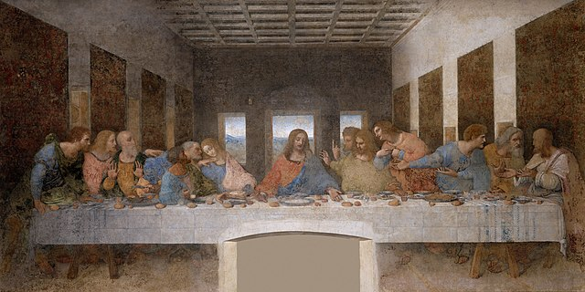
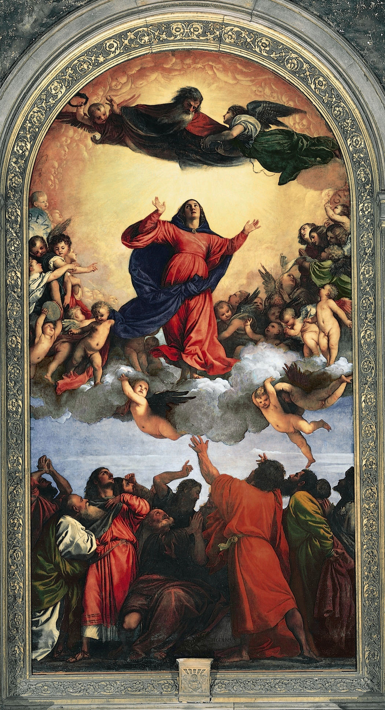

The Renaissance, which means "rebirth" in French, was a period in European history that marked the transition from the Middle Ages to the modern era. Spanning roughly from the 14th to the 17th century, the Renaissance was characterized by a revival of interest in the classical knowledge, art, and philosophies of ancient Greece and Rome. It represented a cultural movement that emphasized humanism, individual achievement, scientific inquiry, and secularism, in contrast to the religiously dominated thinking of the Middle Ages. The Renaissance began in Italy, particularly in cities like Florence, Venice, and Rome, and gradually spread to the rest of Europe. It is widely regarded as the dawn of the modern age, fostering advancements in science, art, literature, and exploration.
One of the most iconic examples of the Renaissance is the artistic achievements of Florence. The city produced some of the most renowned artists and thinkers of the time, including Leonardo da Vinci, Michelangelo, and Raphael. Leonardo’s works, such as "The Last Supper" and "Mona Lisa," exemplify the Renaissance’s focus on realism, the study of human anatomy, and the natural world. Michelangelo’s "David" and the Sistine Chapel ceiling are further masterpieces that reflect the Renaissance ideal of glorifying human potential and beauty. These works represent the Renaissance's integration of artistic creativity with scientific precision and intellectual rigor, blending classical inspiration with contemporary innovation. The flourishing of art in Florence illustrates how the Renaissance marked a rebirth of classical ideals in new and transformative ways.
Why is it essential to learn Renaissance?
The Renaissance represents a crucial period in the history of human thought, art, and culture that fundamentally shaped the intellectual landscape of the modern world. By learning about the Renaissance, we gain insight into the development of key ideas that define contemporary Western thought, including humanism, individualism, and secularism. During the Renaissance, there was a renewed interest in classical antiquity, which inspired scholars, artists, and thinkers to explore human potential, creativity, and achievement in ways that were not constrained by religious orthodoxy. This period also marked a shift from a medieval worldview dominated by religious dogma to one that emphasized critical thinking, scientific inquiry, and artistic expression. Studying the Renaissance helps us appreciate how modern philosophies, artistic practices, and even scientific methodologies have roots in the innovations and explorations of this era. For instance, the works of Renaissance artists like Michelangelo and Leonardo da Vinci continue to influence art today, while the intellectual contributions of figures like Erasmus and Machiavelli remain relevant in politics and ethics.
One of the most transformative aspects of the Renaissance was the revolution in science and technology that laid the groundwork for modern scientific thought. The Renaissance sparked the Scientific Revolution, a period in which traditional understandings of the natural world were questioned, leading to groundbreaking discoveries in astronomy, physics, medicine, and more. Figures like Galileo Galilei, Nicolaus Copernicus, and Johannes Kepler challenged long-held views about the cosmos, contributing to a more empirical approach to understanding the universe. Their work paved the way for future advancements in science and technology, which continue to influence fields such as astronomy, biology, and medicine today. By studying the Renaissance, we can better understand the origins of the scientific method, the spirit of inquiry, and the importance of evidence-based reasoning—principles that remain central to scientific research and technological development. It also highlights the critical role that curiosity, innovation, and the questioning of authority play in the progress of human knowledge.
The Renaissance was not just an artistic and intellectual movement; it was also a period of significant social and political change that redefined how societies and governments functioned. The rise of powerful city-states in Italy, the consolidation of nation-states across Europe, and the emergence of a new merchant class all contributed to the changing political landscape of the time. Leaders like Lorenzo de' Medici in Florence and monarchs such as Queen Elizabeth I of England played pivotal roles in fostering the Renaissance's intellectual and artistic achievements, often through patronage. Meanwhile, Renaissance political thinkers like Niccolò Machiavelli redefined governance, exploring the complexities of power, leadership, and statecraft in ways that remain influential in modern political theory. Learning about the Renaissance provides valuable lessons on governance, diplomacy, and the impact of culture on politics, helping us better understand the evolution of modern state systems and political institutions. Moreover, this period saw the early development of capitalism, the expansion of global trade, and the birth of European colonialism, which are all key factors in shaping today's global economy and geopolitical dynamics. Understanding these developments helps us make sense of contemporary political and economic structures.
Politics
Rise of City-States and Political Power in Italy
The political landscape of the Renaissance, particularly in Italy, was dominated by the rise of powerful city-states, such as Florence, Venice, and Milan. These city-states were often governed by wealthy merchant families, who wielded significant influence over politics, commerce, and culture. In Florence, the Medici family exemplified this dynamic, with figures like Lorenzo de’ Medici playing a central role in both political leadership and the patronage of Renaissance artists and scholars. The city-state system encouraged competition and rivalry, which contributed to the flourishing of the arts and intellectual pursuits as each city sought to outdo the others in terms of cultural achievement and grandeur. Venice, for example, became a hub of trade and naval power, while Florence became synonymous with art, philosophy, and finance. The political fragmentation of Italy meant that there was no unified state, and city-states often engaged in complex alliances, wars, and diplomacy to maintain their autonomy. This environment created a fertile ground for political experimentation and the development of new theories on governance, leadership, and statecraft. More about City-States
Influence of Humanism on Politics
The Renaissance was deeply influenced by humanism, an intellectual movement that emphasized the study of classical antiquity and the potential of human achievement. This philosophical shift had a profound impact on politics, as rulers and political thinkers began to adopt a more pragmatic and secular approach to governance. Humanism encouraged a focus on individual agency, civic virtue, and the practicalities of ruling. Figures like Niccolò Machiavelli embodied this new political thought. His famous work, The Prince, challenged traditional notions of morality in politics and advocated for a pragmatic, sometimes ruthless approach to leadership. Machiavelli’s emphasis on the effectiveness of rulers, rather than their ethical character, marked a departure from the medieval focus on divine authority and religious legitimacy. Instead, Renaissance politics began to revolve around the idea of statecraft as an art form—one that required wisdom, cunning, and adaptability. This humanistic influence allowed for the emergence of political realism, where the focus shifted from ideal governance to practical power dynamics. More about Machiavelli
Monarchical Consolidation in Northern Europe
While Italy was characterized by its fragmented city-states, the political situation in northern Europe during the Renaissance was defined by the consolidation of monarchical power. The Renaissance coincided with the rise of centralized monarchies in countries like England, France, and Spain. In England, the end of the Wars of the Roses allowed the Tudor dynasty to consolidate power under Henry VII and later Henry VIII. This period marked the centralization of authority, as monarchs sought to curtail the influence of the nobility and establish stronger bureaucratic institutions. France experienced similar developments under rulers like Louis XI, who worked to strengthen royal authority and weaken the power of feudal lords. In Spain, the unification of Castile and Aragon under Ferdinand and Isabella laid the groundwork for a centralized state and the expansion of Spanish influence overseas through the discovery of the New World. These monarchs used the wealth generated by new trade routes, colonial expansion, and emerging capitalism to consolidate power, a trend that would define European politics in the following centuries. More about Monarchies in Renaissance
Diplomacy and Warfare
Diplomacy and warfare were crucial elements of Renaissance politics. The Italian Wars, which took place between 1494 and 1559, involved the major powers of Europe, including France, Spain, and the Holy Roman Empire, competing for control over Italian territories. These conflicts marked the increasing involvement of foreign powers in Italian politics and led to the decline of many independent city-states. Renaissance diplomacy was highly developed, with states employing ambassadors, spies, and complex negotiations to maintain a balance of power. The Peace of Lodi in 1454, for example, established a relatively stable period of peace in Italy by balancing the power of the major city-states through alliances. This treaty reflected the importance of diplomacy and alliances in Renaissance politics, as states recognized the need for cooperation to avoid destructive conflicts. However, the increasing use of gunpowder weapons, new military technologies, and the professionalization of armies during this period also contributed to the changing nature of warfare, making conflicts more destructive and altering the dynamics of political power.
The Role of the Church and Religious Politics
Despite the secular trends of humanism, the Catholic Church remained a dominant political force during the Renaissance, particularly in Italy and Spain. The papacy was both a spiritual and temporal power, with popes like Julius II and Leo X engaging in political alliances, military campaigns, and the patronage of the arts. The Church’s wealth and political influence made it a key player in European diplomacy and governance. However, this period also saw the beginning of challenges to the Church’s authority, most notably the Protestant Reformation, which began in 1517 with Martin Luther’s Ninety-Five Theses. The Reformation had profound political consequences, leading to religious wars and the fragmentation of Christendom. In response to the Protestant challenge, the Catholic Church initiated the Counter-Reformation, which sought to reaffirm papal authority and curb the spread of Protestantism. The religious conflicts that arose from these movements shaped the political landscape of Europe, leading to wars like the Thirty Years' War and the eventual rise of secularism in European governance.
Society
Social Hierarchy
During the Renaissance, European society was strictly hierarchical, with well-defined classes that dictated one’s social status, wealth, and political influence. At the top of the social pyramid were the nobility, who held significant power and control over land, military forces, and political decision-making. Many of these noble families were patrons of the arts and culture, sponsoring artists, architects, and scholars, which helped fuel the cultural achievements of the era. Below the nobility were the emerging merchant class, particularly influential in cities like Florence, Venice, and Genoa. This new class gained wealth through trade, banking, and commerce and, in many cases, rivaled or even surpassed the nobility in economic power. Families like the Medici in Florence are prime examples of merchants who rose to political and social prominence during the Renaissance. At the bottom of the social hierarchy were the peasants, who made up the vast majority of the population. Peasants lived in rural areas, working as laborers on the estates of the nobility. Their lives were generally marked by hardship, and they had little opportunity for social mobility.
Urbanization and Growth of Cities
The Renaissance period saw the rapid growth of cities, especially in Italy, which became centers of trade, commerce, and intellectual exchange. Cities such as Florence, Venice, Milan, and Rome became hubs of economic and cultural activity, and urbanization contributed to the rise of a vibrant middle class. These cities were characterized by bustling markets, workshops, and guilds where artisans, merchants, and craftsmen thrived. The expansion of trade routes—particularly with the East—brought wealth to urban centers and fostered a cosmopolitan atmosphere that attracted scholars, artists, and intellectuals from across Europe. Urban society was also more fluid than rural life, offering greater opportunities for social mobility and the exchange of ideas. In cities, the Renaissance ideals of humanism flourished, with citizens seeking education, knowledge, and self-expression. Universities and academies, such as the Platonic Academy in Florence, played a crucial role in shaping Renaissance thought and promoting scholarly pursuits.
Religious Life and Church
Religion played a pivotal role in the daily lives of Renaissance society, and the Catholic Church remained a powerful institution throughout Europe. However, this period also saw significant changes in religious thought and practice, culminating in the Protestant Reformation by the early 16th century. In Italy and other parts of Europe, the Church was a central authority that governed many aspects of life, from education to moral conduct. The clergy held considerable power, and the Church was a major patron of Renaissance art and architecture, commissioning works from artists like Michelangelo, Raphael, and Leonardo da Vinci. Nevertheless, there were growing criticisms of the Church’s wealth, corruption, and moral authority, which eventually led to religious reform movements. The Renaissance also witnessed the rise of secularism, particularly in the intellectual and artistic realms, where scholars began to explore non-religious subjects and question traditional doctrines. The tension between secular ideas and religious institutions would define much of the political and social upheaval of the following centuries.
Daily Life
An average person's life during the Renaissance was largely dictated by their social class, with the majority being peasants or lower-class city dwellers, living a life rooted in hard work and survival. In rural areas, the day started before dawn, and the entire household would work in the fields, tending crops, raising livestock, or performing seasonal tasks like plowing, sowing, or harvesting. Their homes were small and simple, often just one room where the entire family slept, cooked, and ate. Meals consisted mainly of bread, porridge, and vegetables, with meat being a rare luxury. Life was physically demanding, and most people had little leisure time. In cities, an average person might work as a craftsman or artisan, laboring in trades such as weaving, blacksmithing, or cobbling. They would typically belong to a guild, a system that regulated their craft and provided some protection in terms of wages and work conditions. Urban life was more fast-paced, and although trade and commerce flourished during the Renaissance, the lower class often lived in cramped and unsanitary conditions, struggling to make ends meet. Women’s roles, whether in rural or urban settings, were primarily centered around household duties—cooking, cleaning, child-rearing, and assisting with farming or business if needed. They married young, had numerous children, and were expected to maintain the home while being subservient to their husbands. Religion remained a cornerstone of daily life, and most people attended church regularly, observing religious festivals and holidays, which provided brief respite from their otherwise monotonous and labor-intensive lives. While Renaissance art and intellectual movements sparked great change, these developments were felt mostly by the elite; for the average person, life continued to revolve around work, survival, and religious devotion, with little exposure to the artistic or scientific advances of the time.
Family and Gender Roles
The Renaissance period brought little change to traditional family structures, which were patriarchal and rigidly defined by gender roles. In most cases, families were male-dominated, with men serving as heads of households, decision-makers, and breadwinners. Women were generally expected to manage the household, bear children, and uphold the family’s reputation. Noble and wealthy families often arranged marriages to secure political alliances, wealth, or social standing, with little regard for romantic love. Women’s opportunities for education and participation in public life were limited compared to men’s, although some exceptional women, such as Isabella d'Este and Catherine de' Medici, wielded considerable political and cultural influence in certain courts. However, for most women, their primary role remained centered around domestic life and child-rearing. Despite this, the Renaissance did see some discussion of women’s rights and status, with thinkers like Christine de Pizan advocating for the education of women and their intellectual potential.
Economic Life
Economic life during the Renaissance was characterized by significant growth in trade, commerce, and urbanization, transforming Europe from a primarily agrarian society to a more dynamic, commercial economy. The period saw the rise of wealthy merchant and banking families, particularly in Italian city-states such as Florence, Venice, and Genoa, where commerce and trade routes flourished. The Medici family in Florence, for example, became powerful through banking and trade, influencing both local politics and culture. International trade expanded due to the reopening of Mediterranean trade routes and the rise of new markets in Asia, Africa, and the Americas, following exploratory voyages by figures like Christopher Columbus and Vasco da Gama. These voyages led to the establishment of global trade networks, introducing European consumers to new goods such as spices, silks, and precious metals. The increased demand for luxury goods, especially among the rising middle class, helped fuel economic prosperity in urban centers. In addition, innovations in banking, such as the development of double-entry bookkeeping and the use of bills of exchange, enabled easier and more secure transactions across vast distances. Agriculture, although still a critical part of the economy, saw advances such as improved crop rotation methods, which boosted productivity. Craftsmanship and guilds also played a key role in the economy, with artisans producing high-quality goods in industries such as textiles, metalwork, and pottery. As cities grew, so did labor specialization, which fostered a more diverse and skilled workforce. This economic prosperity also enabled the flourishing of Renaissance art and culture, as wealthy patrons sponsored artists, architects, and scholars, linking economic growth directly to the cultural and intellectual advancements of the era.
Education and Intellectual Life
Education became increasingly important during the Renaissance, with humanism playing a central role in shaping educational ideals. Humanist thinkers emphasized the study of classical texts from Ancient Greece and Rome, particularly the works of philosophers, poets, and historians. This classical education aimed to create well-rounded individuals who could reason, speak, and write eloquently. For the elite classes, education focused on the studia humanitatis, which included subjects such as grammar, rhetoric, history, poetry, and moral philosophy. Renaissance schools and academies also promoted the development of civic responsibility and ethical behavior, preparing young men for leadership in both public and private life. Although education was largely reserved for the wealthy, there was an increasing emphasis on intellectual development and the pursuit of knowledge. Renaissance humanists like Petrarch and Erasmus championed the idea that education could elevate the mind and soul, helping individuals achieve their full potential.
Science & Philosophy
Science
During the Renaissance, science experienced a profound transformation as it emerged from the shadows of medieval thinking and began to embrace a more empirical and systematic approach. This period, often referred to as the "Age of Discovery" and "Rebirth," was characterized by a surge in curiosity and exploration across various scientific disciplines. Scholars and scientists began to challenge long-held assumptions, relying increasingly on observation, experimentation, and the scientific method to advance their understanding of the natural world. This shift marked a pivotal moment in the history of science, setting the stage for significant breakthroughs that would shape the future of human knowledge and innovation.
During the Renaissance, the field of astronomy saw essential development with the advent of advanced telescopic observations and the questioning of traditional celestial models. One of the most pivotal figures in this transformation was Galileo Galilei, whose work dramatically reshaped the understanding of the cosmos. Galileo’s use of the telescope, which he significantly improved, allowed him to make revolutionary observations. In 1609, Galileo turned his enhanced telescope towards Jupiter and discovered its four largest moons—Io, Europa, Ganymede, and Callisto. This discovery was groundbreaking because it provided direct evidence that not all celestial bodies orbited the Earth, challenging the long-standing geocentric model proposed by Ptolemy. Galileo’s findings offered robust support for the heliocentric theory of Copernicus, suggesting that planets, including Earth, revolved around the Sun. His observations and the resulting data marked a crucial turning point in the history of astronomy, fundamentally altering the scientific perspective on the universe.
The Renaissance marked a transformative era in anatomy and medicine, characterized by a renewed focus on direct observation and detailed anatomical study. Andreas Vesalius emerged as one of the most influential figures in this field with his groundbreaking work, "De Humani Corporis Fabrica" (On the Fabric of the Human Body), published in 1543. Vesalius’s meticulous dissections and detailed illustrations provided an unprecedented level of accuracy in the study of human anatomy. For instance, Vesalius corrected the long-held belief that the human liver consisted of multiple lobes, a concept derived from Galen’s earlier works. Instead, Vesalius demonstrated through his dissections that the liver is a single, unified organ. His emphasis on hands-on anatomical study and direct observation challenged the dominance of ancient texts and laid the groundwork for modern medical practice, establishing a new standard in anatomical precision and understanding.
The Renaissance was a period of remarkable advancement in physics and engineering, with significant contributions from polymaths like Leonardo da Vinci. Among his many innovations, Leonardo’s designs for flying machines stand out as particularly noteworthy. Leonardo’s notebooks are filled with detailed sketches and concepts for an ornithopter, a machine designed to emulate the flapping wings of birds. Although Leonardo’s flying machines were not built during his lifetime, his designs demonstrated a sophisticated understanding of aerodynamics and mechanical principles. For example, his ornithopter design included intricate details on wing structure and flight mechanics. Leonardo’s work on these concepts illustrated a forward-thinking approach to engineering and physics, influencing future developments in aviation and mechanical engineering.
In the Renaissance, mathematics experienced a significant advancement with the formulation of new principles and the refinement of existing theories. Johannes Kepler was a central figure in this mathematical revolution, particularly noted for his work on planetary motion. Kepler’s formulation of the three laws of planetary motion, with the first law stating that planets move in elliptical orbits around the Sun, was especially transformative. This law was derived from the extensive astronomical observations made by Tycho Brahe, whose precise data enabled Kepler to describe planetary orbits with unprecedented accuracy. For instance, Kepler’s analysis of Mars’s orbit led to the discovery that it was elliptical, contrary to the previously accepted circular model. This mathematical description of planetary motion was pivotal in advancing the field of celestial mechanics and laid the groundwork for the future development of Newtonian physics. More about Science in Renaissance
Philosophy
During the Renaissance, philosophy underwent a significant revival and transformation as scholars rediscovered and reinterpreted classical texts and integrated them with contemporary thought. This period saw a shift from medieval scholasticism to a focus on humanism, individualism, and empirical inquiry. Renaissance philosophers sought to reconcile classical philosophy with the emerging scientific perspective, contributing to a rich tapestry of intellectual exploration. Key works from this era include Niccolò Machiavelli's "The Prince," which explored political philosophy, and Francis Bacon's "Novum Organum," which laid the groundwork for the modern scientific method. These examples reflect the broader movement toward a more empirical and human-centered approach to philosophical inquiry.
During the Renaissance, political philosophy was notably influenced by Niccolò Machiavelli's seminal work, "The Prince." This treatise, written in 1513, offers a pragmatic and often stark analysis of political power and leadership. Machiavelli's work broke away from the idealistic views of earlier political theorists, focusing instead on realpolitik—the practicalities of power and governance. Machiavelli argued that rulers should prioritize the stability and success of the state over traditional moral considerations, encapsulating his ideas in the famous assertion that "the ends justify the means." His insights into the nature of power, statecraft, and leadership had a profound impact on both contemporary and later political thought, marking a pivotal shift in how political philosophy was approached during the Renaissance.
Another major development in Renaissance philosophy came with Francis Bacon's "Novum Organum," published in 1620. This work was a cornerstone in the development of the scientific method and empirical research. Bacon criticized the reliance on Aristotelian logic and emphasized the need for a new approach to acquiring knowledge. He proposed an inductive methodology, where knowledge should be derived from empirical observation and experimentation rather than purely deductive reasoning. Bacon's emphasis on systematic experimentation and the collection of data significantly influenced the progression of modern science, marking a departure from speculative philosophy to a more evidence-based approach. His ideas laid the foundation for the development of the scientific method and had a lasting impact on the philosophy of science.
Michel de Montaigne's "Essays," first published in 1580, represent a significant contribution to Renaissance philosophy through their exploration of human nature and self-reflection. Montaigne's work is notable for its introspective and personal approach, offering insights into the complexities of human experience and behavior. Through a series of self-exploratory essays, Montaigne examined topics such as skepticism, education, and the nature of knowledge. His method of introspective writing and his emphasis on the subjective experience of individuals provided a new perspective on philosophical inquiry, focusing on the individual's inner life and personal reflections. Montaigne's approach influenced later philosophical thought and contributed to the development of modern introspective and existential philosophy. More about Philosophy in Renaissance
Art
During the Renaissance, art experienced a remarkable transformation, characterized by a resurgence of classical ideals, a focus on humanism, and innovative techniques that profoundly influenced Western art history. This period saw the development of linear perspective, a renewed emphasis on naturalism, and a greater exploration of human emotion and anatomy. Renowned artists such as Leonardo da Vinci, Michelangelo, and Raphael emerged, creating works that exemplified the Renaissance's blend of technical skill and intellectual depth. Key examples include Leonardo's "The Last Supper," Michelangelo's Sistine Chapel ceiling, and Raphael's "School of Athens." Each of these works reflects the broader artistic trends of the Renaissance, highlighting the era's commitment to merging classical traditions with innovative artistic approaches.
One of the most iconic works of Renaissance art is Leonardo da Vinci's "The Last Supper," painted between 1495 and 1498. This masterpiece depicts the moment when Jesus announces that one of his disciples will betray him, capturing a dramatic and emotional reaction from the group. Da Vinci's innovative use of perspective, with a single vanishing point behind Christ, creates a sense of depth and focus that draws the viewer's eye to the central figure. The composition and use of light and shadow further enhance the realism and intensity of the scene. "The Last Supper" exemplifies the Renaissance commitment to naturalism and psychological depth, marking a significant advancement in the portrayal of human emotion and narrative in art.

Cr.: Wikipedia
Michelangelo's frescoes on the ceiling of the Sistine Chapel, completed between 1508 and 1512, represent a monumental achievement in Renaissance art. This vast ceiling is renowned for its intricate and dramatic depiction of biblical scenes, including the famous "Creation of Adam," where God and Adam reach out towards each other in a nearly touching gesture. Michelangelo's mastery of anatomy, his dynamic compositions, and the sheer scale of the work exemplify the Renaissance emphasis on classical ideals and human potential. The Sistine Chapel ceiling not only showcases Michelangelo's artistic prowess but also reflects the Renaissance fascination with humanism and the divine, making it one of the most celebrated works of the period.
Cr.: Smarthistory
Raphael's "School of Athens," painted between 1509 and 1511, is a defining example of Renaissance art and philosophy. This fresco, located in the Vatican's Stanza della Segnatura, depicts a gathering of great philosophers and scholars from antiquity, including Plato, Aristotle, and Socrates, engaged in discussion. Raphael's use of perspective, architectural grandeur, and the inclusion of contemporary figures such as himself and Leonardo da Vinci among the ancient philosophers reflect the Renaissance blend of classical tradition and modern thought. The fresco serves as a celebration of intellectual inquiry and the humanist ideal of knowledge, illustrating the Renaissance reverence for classical learning and the pursuit of wisdom.
Cr.: Antigone Journal
Titian's "Assumption of the Virgin," completed in 1516-1518, stands as a significant contribution to Renaissance art, particularly in the use of color and dynamic composition. This altarpiece depicts the Virgin Mary's ascent to heaven, surrounded by a host of angels and apostles. Titian's use of vibrant colors, dramatic lighting, and fluid brushwork exemplifies the Renaissance interest in capturing movement and emotion. The painting's grandeur and emotional impact reflect the period's focus on religious themes and the celebration of divine beauty. Titian's innovative approach to color and composition influenced the development of Baroque art and left a lasting legacy in the history of Western painting.

Cr.: Wikipedia
Albrecht Dürer's "Melencolia I," created in 1514, is a renowned example of Renaissance printmaking and symbolic art. This engraving depicts a melancholic figure surrounded by various symbolic objects, including a polyhedron and a magic square. Dürer's work reflects the Renaissance interest in the interplay between science, art, and philosophy. The intricate detail and use of symbolism in "Melencolia I" reveal the era's fascination with human emotion, intellectual pursuits, and the complexity of the human condition. Dürer's mastery of the engraving technique and his ability to convey profound themes through art make this work a significant example of Renaissance artistic and intellectual exploration.
Cr.: Wikipedia
Key Lessons
Embracing Humanism and Individual Potential
One of the most profound lessons from the Renaissance is the celebration of humanism and the belief in individual potential. This period marked a shift from the medieval focus on divine and collective existence to an emphasis on individual achievement and personal worth. The Renaissance humanists, like Petrarch and Erasmus, promoted the study of classical texts and emphasized the importance of human experience and reason. An example of this is Leonardo da Vinci, whose work epitomizes the Renaissance ideal of the “Renaissance man” – a polymath whose diverse talents ranged from art to engineering to anatomy. Leonardo’s meticulous studies of the human body and his innovative designs highlight how a commitment to understanding and developing human potential can lead to remarkable achievements. This lesson encourages us to value and cultivate our own unique skills and interests, fostering a culture that celebrates individual contributions and personal growth.
Innovative Use of Perspective in Art
The Renaissance brought about revolutionary changes in artistic techniques, particularly the development of linear perspective, which transformed the way space and depth were represented in art. The introduction of perspective allowed artists to create more realistic and three-dimensional images on a flat surface. A prime example is Leonardo da Vinci’s "The Last Supper," which employs a vanishing point to create a sense of depth and focus, drawing the viewer’s attention to the central figure of Christ. This innovation not only enhanced the visual impact of art but also demonstrated the power of new techniques to convey complex narratives and emotions. The lesson here is the value of innovation and the continuous pursuit of improvement in any field. Embracing new methods and technologies can lead to groundbreaking advancements and deeper understanding.
The Value of Knowledge and Education
The Renaissance period exemplifies the interconnectedness of art and science, where advancements in one field often influenced the other. Leonardo da Vinci’s work is a notable example of this synergy, as his scientific studies of anatomy, mechanics, and natural phenomena informed his artistic creations. His detailed anatomical sketches, for instance, were both a scientific endeavor and an artistic pursuit that enriched his paintings with greater realism and accuracy. This cross-disciplinary approach teaches us the importance of integrating knowledge from various fields to foster innovation and holistic understanding. By exploring and combining different areas of expertise, we can develop more comprehensive solutions and insights that push the boundaries of traditional disciplines.
The Impact of Patronage on Artistic and Intellectual Development
During the Renaissance, the support of wealthy patrons was crucial for the flourishing of art and intellectual pursuits. The Medici family in Florence, for example, were prominent patrons who funded numerous artists, including Michelangelo and Botticelli. Their financial and social support enabled these artists to focus on their work and produce masterpieces that defined the era. This system of patronage highlights the importance of support networks and resources in facilitating creativity and scholarly advancement. For contemporary society, this lesson underscores the need for investment in the arts, education, and research to foster cultural and intellectual growth. Recognizing and supporting talent through patronage or funding can lead to significant achievements and cultural enrichment.
Revaluation of Classical Knowledge and its Influence
The Renaissance was characterized by a revival and reinterpretation of classical knowledge from ancient Greece and Rome. Scholars and artists looked back to classical texts and philosophies to inspire new ideas and works. For instance, Raphael’s "School of Athens" celebrates this revival by depicting famous philosophers from antiquity, reflecting the period’s deep engagement with classical thought. This revaluation of classical knowledge teaches us the value of historical insights and the continuous relevance of past ideas. By studying and learning from previous civilizations, we can gain a better understanding of our own era and build upon the foundations laid by earlier thinkers and creators. This approach encourages a respect for historical context and a willingness to integrate enduring wisdom into contemporary practice.
Facts about Renaissance
The Renaissance was marked by the emergence of humanism, a cultural and intellectual movement that shifted focus from religious doctrines to human potential and achievements. Humanism encouraged a revival of classical learning from ancient Greece and Rome and emphasized the value of individual experience and reason. This intellectual shift was embodied in the works of figures like Petrarch, who is often considered the father of humanism. His writings and those of his contemporaries emphasized the study of classical texts, the importance of rhetoric, and the potential for human greatness independent of religious constraints. Humanism not only transformed education and literature but also influenced art, philosophy, and science, laying the groundwork for a more secular and inquiry-driven approach to understanding the world.
AOne of the most revolutionary advancements during the Renaissance was the development of linear perspective, which allowed artists to create the illusion of depth and three-dimensionality on a flat surface. This technique was formalized by Filippo Brunelleschi and later refined by artists like Leon Battista Alberti. The application of linear perspective can be seen in masterpieces such as Leonardo da Vinci’s "The Last Supper," where the use of vanishing points and converging lines creates a realistic spatial depth that had not been achieved before. This innovation not only transformed artistic representation but also influenced architectural design and spatial organization, marking a significant shift in the visual arts.
The Renaissance is renowned for its incredible contributions to art, with figures like Leonardo da Vinci, Michelangelo, and Raphael producing works that remain iconic to this day. Leonardo’s "Mona Lisa" and "Vitruvian Man," Michelangelo’s "David" and the Sistine Chapel ceiling, and Raphael’s "School of Athens" are exemplary of the period’s artistic achievements. These artists employed techniques such as chiaroscuro (the use of strong contrasts between light and dark) and sfumato (a method of blending colors and tones) to create more lifelike and emotionally expressive works. The Renaissance art movement was supported by the patronage of wealthy individuals and families, such as the Medici, who provided the financial means for these artists to create their masterpieces. This period of artistic flourishing left an enduring legacy that continues to influence art and culture today.
The Renaissance saw a resurgence in the study and appreciation of classical knowledge from ancient Greece and Rome. This revival was driven by scholars who sought to rediscover and apply the philosophical, scientific, and literary works of antiquity. Key figures such as Erasmus of Rotterdam and Thomas More were instrumental in this movement, producing works that reflected classical ideals and contributed to the intellectual climate of the time. The founding of humanist schools and universities further facilitated the spread of classical learning, emphasizing subjects such as rhetoric, grammar, and history. This revival not only enriched contemporary scholarship but also helped to shape modern Western thought and educational practices.
The Renaissance was a period of significant technological advancement, including the development of new tools and methods that transformed various fields. One of the most notable innovations was the invention of the printing press by Johannes Gutenberg around 1440. This invention revolutionized the dissemination of knowledge by making books more accessible and affordable, leading to a rapid spread of ideas and an increase in literacy rates across Europe. The printing press played a crucial role in the proliferation of Renaissance art, literature, and scientific discoveries, facilitating the exchange of knowledge and ideas on an unprecedented scale. This technological advancement was instrumental in shaping the intellectual and cultural landscape of the Renaissance and beyond.
Quiz
1. How did the Hubble Deep Field observation in 1995 change our understanding of the universe?
2. Describe one contribution of ancient Babylonians to early astronomy.
3. Explain the impact of the Islamic Golden Age on the development of astronomy during the medieval period.
4. How did the heliocentric model proposed by Copernicus revolutionize our understanding of the solar system?
5. What are some of the key research areas in contemporary astronomy, and why are they significant?